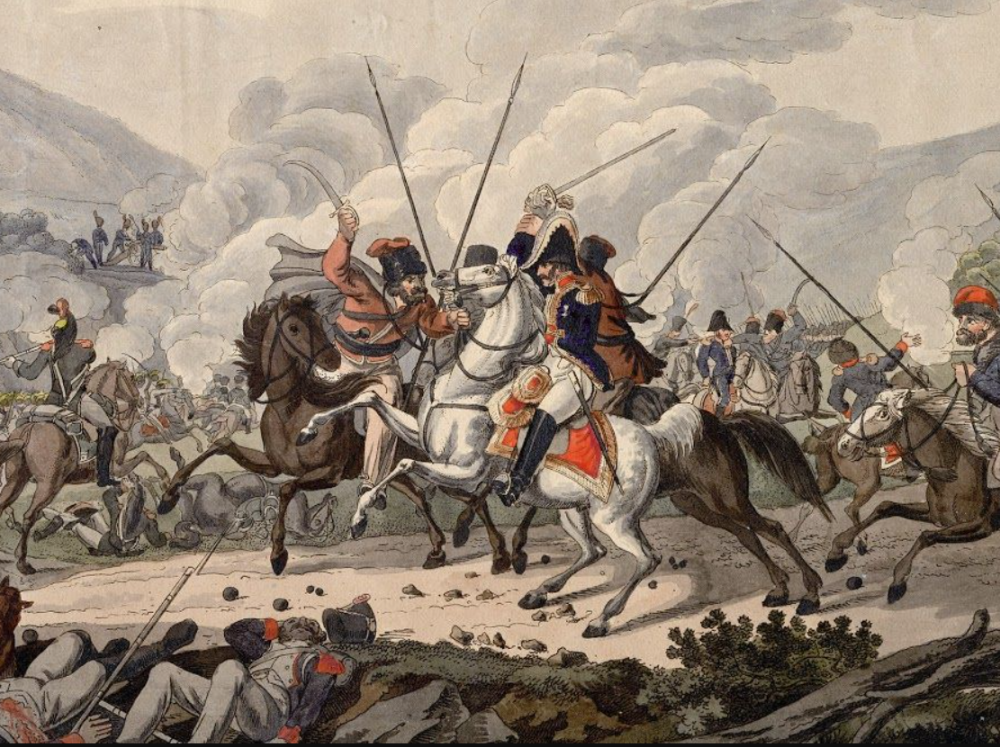
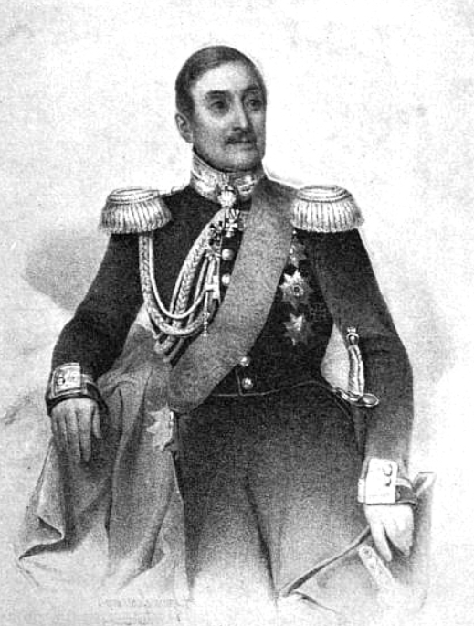
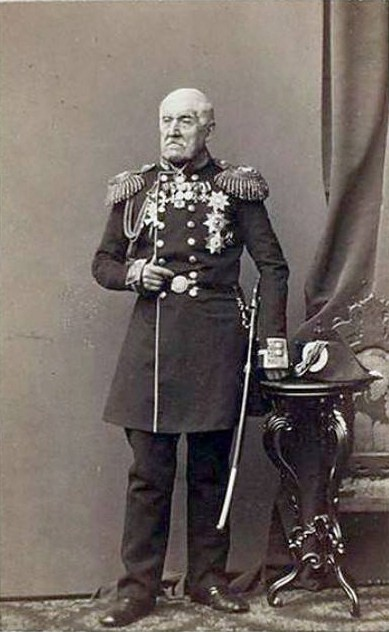
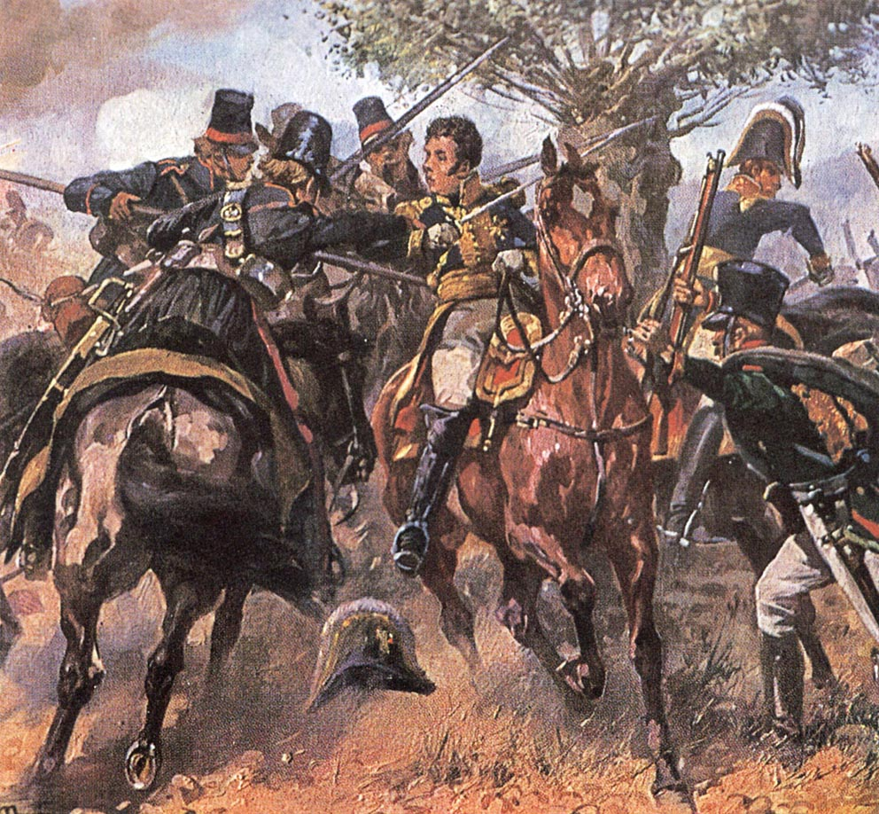
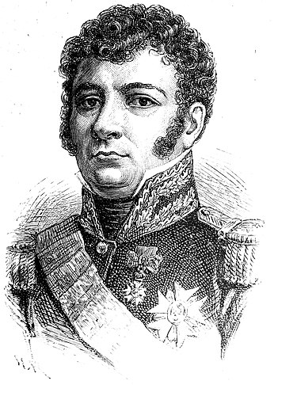

쿨름 전투 (7) - 방담과 짜르
게시: 2024-06-17T06:30:49+09:00
쿨름 전투의 주인공이라고 할 수 있는 방담은 어떤 운명을 맞이했을까요? 방담 자신의 주장에 따르면 그는 최후까지 전방의 러시아군을 막아내던 포병대를 지휘했고, 마지막 순간까지 병사들을 지휘하느라 결국 프로이센군을 뚫고 포위망을 빠져나간 1만여 명의 무리 속에는 끼지 못했습니다. 그는 결국 코삭 기병들에게 사로 잡혀 포로가 되었는데, 프랑스측의 기록에 따르면 짜르 앞에 끌려간 그는 알렉산드르로부터 약탈을 일삼는 불한당이라는 꾸짖음을 듣자, '난 최소한 지 애비를 죽인 자식이라는 비난은 받지 않는다'라고 말대꾸를 했다고 합니다.

(쿨름 전투에서 코삭 기병들에게 사로잡히는 방담의 모습입니다.) 이건 거친 성격 탓에 술트와 제롬 보나파르트 등 자신의 상관들과 끊임없이 알력을 빚던 방담의 성격을 생각하면 꽤 그럴싸한 이야기입니다. 전해지는 바에 따르면 1809년 바그람 전투 이후, 우디노와 마르몽도 원수봉을 받는데 자신은 받지 못하자 방담은 화를 참지 못하고 (물론 면전에서는 아니었겠지만) "내가 아니었다면 지금도 코르시카에서 돼지나 치고 있을 녀석"이라며 나폴레옹에게도 욕을 했다고 하니까, 더욱 믿을 만한 이야기입니다. 하지만 경건하고 온화한 성격이었던 알렉산드르가 포로가 되어 끌려온 프랑스 장군에게 다짜고짜 욕을 했을 것 같지는 않습니다. 방담이 포로가 되는 현장에 직접 있었고, 그를 데리고 짜르에게 갔다고 주장하는 러시아 해군 대위 콜자코프(Paul Andreyevich Kolzakov)의 회고록에 기록된 방담과 알렉산드르의 만남은 매우 다른 분위기였습니다.

(콜자코프는 상트 페체르부르그 출신으로서, 당시 34세의 한창 나이였습니다. 해군인 그가 내륙 깊숙한 쿨름에 있었던 것은 그가 황실 소유의 요트인 네바(Neva) 호의 선장으로 임명된 것을 인연으로 하여, 당시 근위대 사령관 콘스탄틴 대공의 참모가 되었기 때문이었습니다.)

(콜자코프는 도중에 이런저런 부침을 겪기도 했지만 나중에 제독의 지위에 올랐을 뿐만 아니라 85세까지 장수하여 1864년까지 생존했습니다. 덕분에 이렇게 노년에 사진까지 남겼습니다.) 콜자코프의 기록에 따르면 자신이 전령 역할을 하느라 지친 말을 타고 전장을 누비고 있을 때, 전방에서 일단의 프랑스군 기병들이 달려오더랍니다. 콜자코프는 도망치려 했으나 자신의 말이 너무 지쳐 제대로 뛰지를 못했는데, 가만 보니 그 프랑스군 기병들은 러시아 코삭 기병들에게 쫓기는 중이었고, 그 중 하나가 "거기 러시아 장군! 나를 좀 구해주시요!"라고 외쳤습니다. 콜자코프는 원래 해군 대위로서 짜르의 친동생이자 근위대 사령관인 콘스탄틴 대공의 참모 자격으로 거기 와있던 사람이었기에 해군 장교용 이각모를 쓰고 있었는데 그로 인해 장군으로 오인된 것입니다. 그렇게 외친 사람이 알고 보니 방담이었습니다. 아무튼 이렇게 몇몇 부하들과 함께 포로가 되던 순간 방담은 매우 지친 모습이었고 아무래도 술에 취한 것 같았다고 합니다. 그렇게 반쯤 맛이 간 상황에서 짜르가 있는 곳으로 이동한 방담은 말에서 내리자 먼저 여태까지 자신이 타던 말에 키스를 한 뒤, 무척이나 연극스러운 제스처와 말투로 검을 뽑아 알렉산드르에게 바치며 항복한다는 선언을 했습니다. 짜르는 무척이나 유창한 프랑스어로 이렇게 답을 했다고 합니다. "Général, j'en suis bien fâché , mais c'est le sort de la guerre!" (장군, 무척 유감이오, 하지만 그게 전쟁의 운명이라오!) 그리고는 짜르는 볼콘스키 대공에게 그 검을 넘기며 방담을 호송하라고 지시했는데, 방담은 물러가기 전에 '하나만 더, 저를 부디 오스트리아인들 손에 넘기지는 말아주십시요'라고 부탁했습니다. 마침 그 자리에는 승전 소식을 듣고 서둘러 달려온 오스트리아의 프란츠 1세도 있었는데, 알렉산드르는 슬쩍 프란츠 1세의 눈치를 보더니 미소를 지으며 방담에게 그러지 않겠다고 약속을 했습니다.

(방담이 포로가 되는 장면을 그린 다른 그림입니다. 다른 버전의 이야기에 따르면 방담이 포로가 된 것은 콜자코프의 설명과는 매우 다르게, 프랑스 보병들과 함께 말을 타고 후퇴하는 도중에 어디선가 갑자기 나타나 달려든 일단의 코삭들에게 납치되다시피 끌려갔다고 합니다. 그 옆에 있던 악소(Haxo) 장군도 함께 끌려갔는데, 이때 바로 옆에 있던 프랑스 보병들이 코삭들에게 발포하기도 전에 이 모든 납치가 이루어졌다고 하네요.) 결국 당시 관례대로 매우 예의바른 만남이었던 셈이고, 아마도 이 버전의 이야기가 사실에 가까울 것으로 추정됩니다. 사실 방담이 악명이 높은 장군이긴 했지만 원수도 아니라 그냥 군단장에 불과했으므로 방담의 과거 악행에 대해 짜르가 잘 알고 있었을 것 같지는 않습니다. 또 방담은 1812년 러시아 침공에는 (상관인 제롬과 싸우고 쫓겨나는 바람에) 참전하지 않았으므로 방담이 약탈과 노략질 등으로 악명 높았다고 해도 그것은 러시아와는 무관한 일이었습니다. 그런데도 예의바른 신사였던 알렉산드르가 불운한 포로 신세의 방담에게 만나자마자 옛날 일을 비난했다는 것은 상상하기 어려운 일입니다. 아마도 프랑스측에서는 거칠고 용감한 방담이 포로가 되더라도 얌전히 굴지는 않았을 것이라고 믿고 그런 말을 지어낸 것이 아닐까 합니다. 실은 콜자코프의 방담에 대한 기록은 거기서 끝나지 않고 더 이어지는데, 아니나 다를까 방담은 얌전히 굴지는 않았습니다. 다만 그 대상은 알렉산드르가 아니라 차가운 얼굴의 오스트리아 황제 프란츠 1세였습니다. 방담은 일단 연합군의 임시 집결지였던 테플리츠로 마차편으로 호송되었는데, 그 성문에서 오스트리아 보초들이 일단 방담의 마차를 세웠습니다. 그때 마침 쿨름 전투에서 돌아오던 오스트리아 부대들이 성문을 통과하고 있었는데, 그 병사들이 방담을 손가락으로 가리키며 웃고 비웃었다고 합니다. 방담은 자신이 고대 로마에서처럼 개선식에 구경거리로 끌려나온 포로 취급을 받고 있다고 오해하고는 마구 화를 냈는데, 때마침 프란츠 1세도 수행원들과 함께 방담 앞을 지나갔습니다. 프란츠 1세를 본 방담은 마차 창문 밖으로 몸을 내밀고 매우 불손한 어조로 이렇게 외쳤다고 콜자코프는 전했습니다. "폐하, 이게 폐하의 사위인 나폴레옹 황제의 장군을 대접하는 방식입니까? 저는 이 대접에 대해 우리 황제 폐하께 낱낱이 알릴 것이니, 우리 황제 폐하께서 행하실 보복에 대해 대비를 단단히 하시길 바랍니다!" 난데없는 욕을 먹은 프란츠 1세는 손을 닦으며 그 옆을 지나가며 역시 프랑스어로 이렇게 답했다고 합니다. "Ce n'est pas ma faute. (이건 내 잘못이 아닐세.)

(방담의 또다른 초상화 중 하나입니다. 모든 초상화에서 공통적으로 나타나는 것이 저 퉁퉁한 얼굴과 곱슬머리입니다. 콜자코프의 회고록에도 방담은 무척 살집이 있는 얼굴을 하고 있었다고 나옵니다.) 방담이 이렇게 오스트리아의 포로가 되는 것에 대해 질색을 한 이유가 있긴 했습니다. 그는 예전부터 오스트리아 일대에서 많은 전투를 치르며 현지 주민들에 대해 약탈 및 잔혹 행위를 저지른 것이 많았던 것입니다. 방담은 곧 러시아군에게 호송되어 일단은 프라하로 이동했는데, 거기서도 그의 악행에 대한 소문이 널리 퍼져 있었는지 프라하 시민들이 거리를 통과하는 그의 마차에 돌을 던져 그를 호위하던 코삭 8명이 다칠 정도였습니다. 결국 그는 러시아로 호송되었고, 거기서 전쟁이 끝날 때까지 포로 생활을 한 뒤 나폴레옹이 퇴위한 프랑스로 돌아왔습니다. 후일담이지만, 나폴레옹이 백일천하를 일으키기 전, 부르봉 왕정에서는 그렇게 러시아에서 포로 생활을 마치고 돌아온 방담을 한동안 방치했다가, 다른 많은 장군들에게 그랬던 것처럼 방담에게도 자신들을 위해 일해보지 않겠느냐는 취지로 궁정에 와서 왕가를 알현하도록 명령했습니다. 그런데 성질이 죽지 않았던 방담은 일언지하에 이 알현 요청을 거절했고, 그 대가로 방담은 고향인 카셀(Cassel)로 추방되었습니다. 그런데 방담과의 접견이 이렇게 취소되자 정작 부르봉 왕가 사람들도 한숨을 돌렸다고 합니다. 성격이 개차반이라는 방담을 직접 만나는 것이 그들에게도 무척이나 부담이 되었던 것입니다. 나중에 나폴레옹이 백일천하를 일으키자, 방담은 기다렸다는 듯이 그의 휘하로 달려왔고, 결국 워털루 패전 이후 그는 다시 카셀로 추방되었다가 벨기에로 다시 쫓겨났고, 결국 거기서도 추방되어 대서양 건너 미국 필라델피아에서 한동안 거주해야 했습니다. 그는 결국 1819년에야 프랑스로의 귀국이 허락되었고 군에도 복직했다가 1825년 은퇴하여 조용히 살았습니다. 다음 편에서는 쿨름 전투의 의미를 살펴보는 에필로그가 이어집니다. Source : The Life of Napoleon Bonaparte, by William Milligan Sloane Napoleon and the Struggle for Germany, by Leggiere, Michael V With Napoleon's Guns by Colonel Jean-Nicolas-Auguste Noël https://www.pinterest.co.uk/pin/143059725653536439/ https://napoleon-monuments.eu/Napoleon1er/Vandamme.htm https://alchetron.com/Battle-of-Kulm https://battlefieldanomalies.com/napoleonic-wars/the-battle-of-kulm/ https://commons.wikimedia.org/wiki/Battle_of_Kulm https://www.frenchempire.net/biographies/vandamme/ https://www.napoleon-series.org/research/russianarchives/c_kolzakov.html https://ru.wikipedia.org/wiki/%D0%9A%D0%BE%D0%BB%D0%B7%D0%B0%D0%BA%D0%BE%D0%B2,_%D0%9F%D0%B0%D0%B2%D0%B5%D0%BB_%D0%90%D0%BD%D0%B4%D1%80%D0%B5%D0%B5%D0%B2%D0%B8%D1%87 https://sv.wikipedia.org/wiki/Dominique_Ren%C3%A9_Vandamme